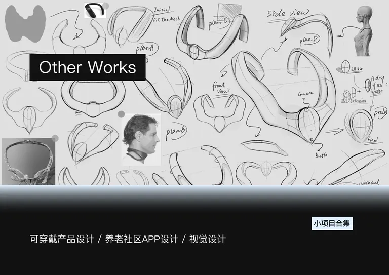

Other Works / 实体与情感交互
在身体、情感与技术之间，继续探索
工业设计训练让我习惯从身体、环境和材料出发思考产品。这些探索把未来情境、可穿戴系统和情感表达带入交互设计。

需要解决什么问题
并非所有体验都发生在屏幕中。实体设备、身体动作和隐喻性的反馈，也会改变人如何理解信息与表达关系。
项目参与
作品包括 I-Health 推测性可穿戴系统，以及利用 Arduino 传感器探索亲子情感表达的互动装置。以下保留原始概念、造型和场景展示。
关键决策与取舍
- 01
用未来情境提出设计问题
I-Health 以推测性设定探索身体与环境的关系，通过系统和形态设计表达概念。
- 02
用动作表达不容易说出的话
互动装置围绕亲子关系中直接赞美的缺席，将情感主题转化为传感器输入与可感知反馈。
- 03
跨越界面，考虑完整体验
将实体形态、操作方式、空间环境与反馈一起考虑，保持对屏幕之外体验的敏感。
产出与验证到哪里
形成可穿戴概念、形态与场景展示，以及互动装置构思和操作流程原稿。
跨领域概念与设计作品。推测性健康设定不代表真实医疗、健康监测或防护能力。
把作品展开来看
带到下一个项目的思考
实体交互提醒我：产品不是界面的总和。人的身体、环境和情感，会持续影响每一次操作。
继续看看